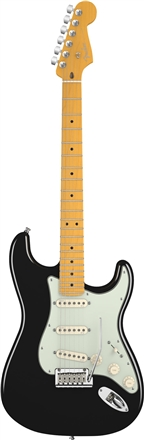
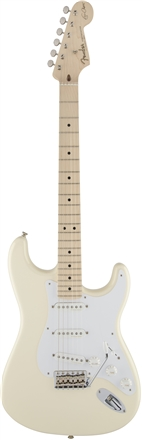
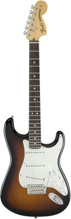

Stratocaster
- AMERICAN DELUXE STRATOCASTER
Caracteristicas
- Mástil de arce con perfil en V suave, alma tipo Bi-Flex™ con ajuste de micro-inclinación Micro-Tilt™
- Diapasón de radio compuesto (9,5”- 14”) con 22 trastes medium jumbo
- Pastillas de mástil y central N3 Noiseless™ de bobina simple para sonidos de Stratocaster mejorados pastillas sin ruido de fondo
- Interruptor S-1™ para una mejor versatilidad de sonidos
- Puente American Deluxe de dos anclajes estilo vintage synchronized con palanca de vibrato de montaje a presión
- Unión de mástil y cuerpo mediante talón ergonómico
- Clavijeros bloqueables en posición escalonada para una mejor estabilidad de afinación

Deluxe Strat 2002
- ERIC CLAPTON STRATOCASTER
Caracteristicas
- Cuerpo de alisa
- Pastillas Vintage Noiseless
- Circuito de medios activo y de tono TBX
- Mástil de perfil especial V suave
- Puente bloqueado con palanca de vibrato de estilo vintage synchronized

Clapton Signature
- AMERICAN SPECIAL STRATOCASTER
Caracteristicas
- Mástil de arce con perfil en C y pala de gran tamaño
- Diapasón de arce con radio 9,5" y 22 trastes jumbo
- Tres pastillas Texas Special™ de bobina simple
- Selector de cinco posiciones
- Circuito de tono tipo Greasebucket™ (reduce las frecuencias agudas sin alterar las frecuencias graves)
- Puente con palanca de vibrato de estilo vintage synchronized

American Special 2005